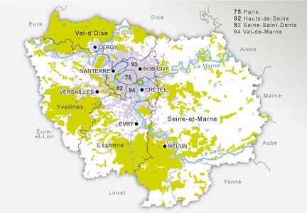
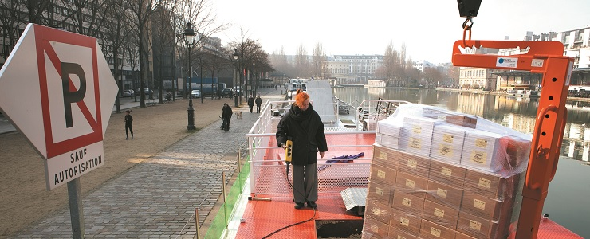
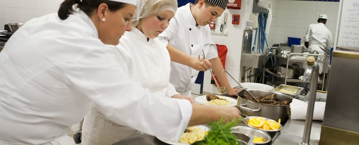
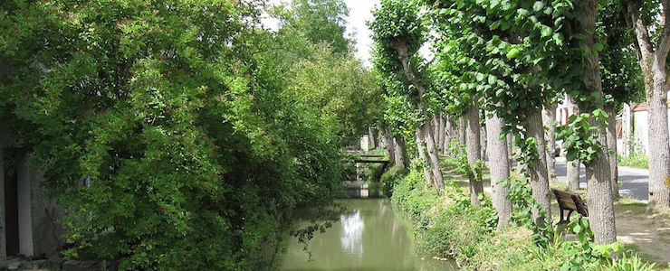
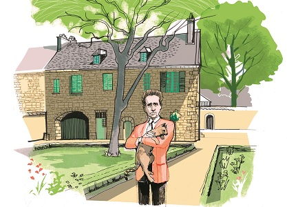

Articles faciles à lire et à comprendre
Présentation de la Région Ile-de-France

La Région Ile-de-France c’est Paris et les 7 départements tout autour.
Que fait la Région ?
La Région dépense beaucoup d’argent pour les transports : train, métro, tramway, bus…
La Région modernise tous ces transports. Elle aide aussi les pauvres et les jeunes à voyager.
La Région aide les entreprises à continuer à donner du travail aux gens.
La Région aide les jeunes qui veulent apprendre :
- Au lycée.
- En apprentissage.
- A l’université.
La Région construit ou rénove des logements et des foyers pour vous.
La Région agit contre la pollution de l’air et de l’eau.
Elle permet de se promener au bord des rivières et de faire du vélo sur des petites routes.
La Région aide les artistes :
- Le théâtre, le cinéma, les spectacles.
- Les écoles de musiques.
- Les bibliothèques et les médiathèques.
- Les musées.
La Région veut que tous les gens soient égaux :
- Les hommes et les femmes.
- Les personnes handicapées.
- Les jeunes et les personnes âgées…
Quels sont les projets de la Région ?
Le monde change vite. La Région veut se préparer au changement.
La Région a des projets pour les 15 ans à venir.
Ces projets sont expliqués dans un document : le Schéma directeur de la Région.
Le but est que tout le monde vive bien :
- Mange bien, travaille, soit en bonne santé.
- Soit aidé dans ses difficultés.
- Puisse profiter de la nature.
Qui fait tout ce travail ?
Vous votez tous les 6 ans pour élire les Conseillers de la Région.
Ils sont nombreux : 208 personnes. Ils se réunissent tous les 2 mois.
Avec leur Président, ils réfléchissent et décident de ce qu’il faut faire avec l’argent de la Région.
Beaucoup de personnes travaillent tous les jours dans des bureaux, à Paris, pour tout faire.
Textes transcrits par les travailleurs de l'Esat d'Avenir APEI, Les Courlis à Chatou et La Roseraie à Carrières-sur-Seine
Promenez-vous dans les parcs naturels

- Un parc naturel
- est un grand territoire où on trouve :
- Des forêts.
- Des lacs et des rivières.
- Des animaux sauvages.
- Des villes et des villages.
Il y a quatre parcs naturels en Ile-de-France :
- Le Vexin français (dans le Val-d’Oise et les Yvelines).
- La Haute Vallée de Chevreuse (dans les Yvelines et l’Essonne).
- Le Gâtinais français (dans l’Essonne et la Seine-et-Marne).
- L’Oise-Pays de France (dans le Val-d’Oise).
La Région Ile-de-France donne de l’argent pour :
- Préserver la nature.
- Donner envie aux touristes de venir.
Dans un parc naturel, vous pouvez :
- Faire du canoë.
- Faire des promenades à pied.
- Faire des promenades à dos d’âne.
- Goûter des spécialités locales.
Il y a un site pour voir ce que vous pouvez faire dans les parcs naturels : www.parcsnaturels.iledefrance.fr
Il y a aussi une application pour smartphones : Apple et Androïd
Textes transcrits par les travailleurs de l'Esat d'Avenir APEI, Les Courlis à Chatou et La Roseraie à Carrières-sur-Seine
Photo prise à Rochefort-en-Yvelines en Haute Vallée de Chevreuse par Florence Joubert de l’agence Picturetank
Le vin est transporté sur l'eau

Le transport par péniche est plus rare que le transport par camion.
Il y a une péniche qui s’appelle L’Alizarine.
La péniche transporte du vin.
La péniche voyage de l’Ardèche jusqu’à l’Ile-de-France.
La péniche parcourt 900 kilomètres.
La péniche traverse 180 écluses.
La péniche arrive à Paris sur le canal de l’Ourcq.
Textes transcrits par les travailleurs de l'Esat d'Avenir APEI, Les Courlis à Chatou et La Roseraie à Carrières-sur-Seine
Photo prise par Magali Delporte de l’agence Picturetank
Des Mureaux à Manille

Les Mureaux est une ville du département des Yvelines.
Manille est la capitale des Philippines.
Les Philippines est le pays le plus menacé par le réchauffement de la planète.
En février 2015, 2 élèves d’un lycée des Mureaux sont allés à Manille.
Les 2 élèves ont accompagné le président de la République.
Le président de la République prépare la réunion mondiale sur le climat.
La réunion mondiale sur le climat aura lieu en décembre 2015 au Bourget (Seine-Saint-Denis).
200 pays vont participer à la réunion mondiale sur le climat.
La Région Ile-de-France est prête à agir pour la planète, avec la participation de tous.
Textes transcrits par les travailleurs de l'Esat d'Avenir APEI, Les Courlis à Chatou et La Roseraie à Carrières-sur-Seine
Photo prise par Nathalie Helluin
50 000 euros pour l'imprimerie de Dammartin-en-Goële
- L’imprimerie Création Tendance Découverte
- se trouve à Dammartin-en-Goële (Seine-et-Marne).
Après l’attentat de Charlie Hebdo,
les terroristes se sont cachés dans l’imprimerie.
La police a arrêté les terroristes dans l’imprimerie.
L’ imprimerie a été en partie détruite.
Le 29 janvier 2015, la Région Ile-de-France a donné 50 000 euros à l’imprimerie Création Tendance Découverte.
La Région est prête à aider les entreprises en difficulté.
Textes transcrits par les travailleurs de l'Esat d'Avenir APEI, Les Courlis à Chatou et La Roseraie à Carrières-sur-Seine
Photo fournie par le ministère de l’Intérieur
En piste pour les Jeux olympiques

En 2024, Paris et la Région Ile-de-France souhaitent accueillir les Jeux olympiques et les Jeux paralympiques.
Les Jeux paralympiques sont les Jeux olympiques pour les personnes en situation de handicap.
Une piste pour les courses de vélo existe à Saint-Quentin-en-Yvelines (Yvelines).
Il y a une base de loisirs à Vaires-Torcy (Seine-et-Marne).
La base de loisirs peut accueillir les épreuves de canoë-kayak et d’aviron.
Les "bases de loisirs" s'appellent maintenant les "îles de loisirs".
Textes transcrits par les travailleurs de l'Esat d'Avenir APEI, Les Courlis à Chatou et La Roseraie à Carrières-sur-Seine
Photo du vélodrome de Saint-Quentin-en-Yvelines (Yvelines) prise par William Dupuy de l’agence Picturetank
La laïcité dans les lycées

- La laïcité
- empêche l'État de privilégier une religion par rapport à une autre.
La laïcité interdit les signes religieux à l’école.
Elle permet à une personne de choisir ou non une religion et de la pratiquer librement.
La Région Ile-de-France s’intéresse à la laïcité dans les lycées et les centres de formation d’apprentis.
Après les attaques du journal Charlie hebdo, certains lycéens n'ont pas respecté pas la minute de silence.
La Région Ile-de-France vous a demandé sur son site www.iledefrance.fr ce que vous en pensez.
La majorité d'entre vous est pour la laïcité dans les lycées.
Textes transcrits par les travailleurs de l'Esat d'Avenir APEI, Les Courlis à Chatou et La Roseraie à Carrières-sur-Seine
Dessin de Béchet et Marion Lefebvre de l’agence Picturetank
Écrire facile à lire, ce n’est pas si simple

- Le facile à lire et à comprendre
- permet de rendre les informations accessibles pour les personnes qui ont un handicap intellectuel. Mais ces informations accessibles seront aussi utiles pour beaucoup d'autres personnes.
Le facile à lire et a comprendre n’est pas connu.
Les personnes en situation de handicap participent à l’écriture des textes en facile à lire et à comprendre.
Le but du facile à lire et à comprendre est de rendre les textes plus simples.
Un journaliste du magazine de la région a suivi 2 jours de formation.
Le journaliste a suivi la formation avec des personnes en situation de handicap ainsi que des encadrants et des bénévoles.
Cette formation se déroule dans l’établissement et service d’aide par le travail La Roseraie à Carrières-Sur-Seine (Yvelines).
Des participants viennent tous les jours pour faire du conditionnement et de la blanchisserie.
D’autres participants viennent de l’établissement et service d’aide par le travail Les Courlis à Chatou (Yvelines).
Ensemble nous apprenons le facile à lire et à comprendre.
Le journaliste a pour mission :
- De vérifier les informations.
- D’enlever les répétitions.
- De contrôler la ponctuation.
- De vérifier que les articles soient compréhensibles par tous.
Le journaliste a des progrès à faire pour le facile à lire.
S’adresser à des personnes en situation de handicap, c’est s’adresser à des personnes qui ont des difficultés.
Les règles du facile à lire sont :
- Eviter les phrases négatives.
- Utiliser des mots simples.
- Utiliser des gros caractères.
- Utiliser une écriture lisible.
- Utiliser les répétitions.
- Parler au lecteur.
Le facile à lire et à comprendre, c’est traduire un texte compliqué en texte simple.
Les personnes en situation de handicap :
- Sont au centre de ce travail.
- Peuvent écrire tout le texte.
- Peuvent relire le texte.
- Doivent valider le texte.
Un texte en facile à lire et à comprendre est souvent associé à un pictogramme.
Le facile à lire et à comprendre est créé en 2005.
Le facile à lire et à comprendre n’est pas connu en France.
Les établissements et service d’aide par le travail utilisent la facile à lire et à comprendre dans les documents internes.

Luc Pallier (directeur de La Roseraie) et Jocelyne Lemerle (directrice des Courlis) sont prêts à faire du facile à lire et à comprendre pour des clients.
Le facile à lire et à comprendre est présent dans les musées.
Le facile à lire et à comprendre est utilisé aussi pour des personnes qui ne comprennent pas très bien le français.
La Région Ile-de-France a utilisé Le facile à lire et à comprendre en 2014 dans l’Agenda 22.
L’Agenda 22 est un document sur l’accessibilité que vous pouvez télécharger en cliquant ici
Une version facile à lire et à comprendre du magazine Ile-de-France est disponible sur internet sur le site
facile-a-lire.iledefrance.fr
Les professionnels du tourisme travaillent avec l’Union Régionale des Associations de Parents et Amis de Personnes Handicapées Mentales.

Le pictogramme facile à lire et à comprendre est déjà utilisé dans certains pays de l’Europe.
Le pictogramme facile à lire et à comprendre est reconnu par les personnes en situation de handicap.
Le pictogramme montre que le texte est facile à lire et à comprendre.
Plus d’informations sur www.inclusion-europe.com
Textes transcrits par les travailleurs de l'Esat d'Avenir APEI, Les Courlis à Chatou et La Roseraie à Carrières-sur-Seine
Photos prises à La Roseraie par Alfred Cromback de l’agence Picturetank
Apprentissage : l'opinion de Julie Noguez

- Le Cerfal
- est un centre de formation d’apprentis.
Le Cerfal regroupe 950 formateurs et 3 500 apprentis.
Il y a 30 centres de formation en Ile-de-France.
Julie Noguez est chef de projet au Cerfal.
Julie Noguez dit que les formations durent entre 3 et 6 mois.
L’apprentissage permet de trouver facilement du travail.
Julie Noguez dit que les entreprises doivent embaucher des apprentis.
L’apprentissage permet d’être formé et payé.
L’apprentissage offre beaucoup de formations.
Julie Noguez dit qu’il y a de moins en moins
de maîtres d’apprentissage dans les entreprises.
Il est difficile de faire travailler des mineurs à cause des lois.
Julie Noguez dit que la Région Ile-de-France va mettre en place le programme Booster.
- Le programme Booster
- permet à des jeunes de trouver un contrat d’apprentissage.
Les jeunes sont aidés par des assistantes sociales et d’autres professionnels.
Julie Noguez dit que l’apprentissage concerne plein de domaines d’activités.
L’apprentissage peut aussi se dérouler dans des pays étrangers.
Les centres de formation peuvent travailler avec les pays de l’Europe.
Julie Noguez dit que les apprentis doivent maîtriser l’informatique.
Les apprentis doivent s’adapter et être prêts à bouger.
L’apprentissage a aussi une mission d’éducation.
Textes transcrits par les travailleurs de l'Esat d'Avenir APEI, Les Courlis à Chatou et La Roseraie à Carrières-sur-Seine
Photo prise par Ludovic Le Couster de l’agence Picturetank
Apprentissage : les solutions de la Région
En 2014, le nombre d'apprentis a baissé en Ile-de-France.
Cette baisse s’explique par la crise.
L’argent pour les centres de formation varie en fonction du nombre d’apprentis.
Moins d’apprentis signifie aussi moins d’argent venant de la taxe d’apprentissage.
La formation en alternance est utile contre le chômage des jeunes.
En juillet 2014, l’Ile-de-France a organisé une grande réunion sur l’apprentissage.
L’objectif est de dépasser les 100 000 apprentis en Île-de-France.
En septembre 2014, l’Ile-de-France a pris des décisions :
- Plus d’argent pour financer les formations en apprentissage.
- Une aide pour les centres de formation des apprentis qui ont des problèmes d’argent.
- Des rencontres avec les professionnels.
- Des personnes pour aider les apprentis.
Des actions sont déjà mises en place :
- Les apprentis travaillent dans le monde entier.
- 4 000 apprentis et formateurs utilisent des tablettes.
72 centres de formation d'apprentis de l’Ile-de-France veulent améliorer leur travail en 2015.
Les centres de formation d'apprentis veulent de plus en plus de contrats.
Les centres de formation d'apprentis veulent rendre l’apprentissage plus dynamique.
Textes transcrits par les travailleurs de l'Esat d'Avenir APEI, Les Courlis à Chatou et La Roseraie à Carrières-sur-Seine
Photo prise dans une école de Nanterre par Ludovic Le Couster de l’agence Picturetank
Apprentissage : des bonnes adresses pour vous

Dans certaines écoles de restauration, il y a des restaurants d’apprentissage.
Les restaurants d’apprentissage sont ouverts au public.
Les restaurants d’apprentissage offrent des menus de qualité.
Les menus ne sont pas chers.
Les restaurants d’apprentissage sont souvent complets.
Il y a du monde.
Les restaurants d’apprentissage les plus connus sont :
- L’école française de gastronomie Ferrandi à Paris 6ème.
- L’institut de l’hôtellerie et des arts culinaires à Saint-Gratien (Val d’Oise).
- L’école de l’environnement et du cadre de vie à Jouy-en-Josas (Yvelines).
- Le centre de formation d’apprentis du Moulin de la Planche à Ormoy-la-Rivière (Essonne).
Vous pouvez profiter du savoir-faire des apprentis dans d’autres domaines.
Il y a :
- Le Cerfal à Thiais (Val-de-Marne).
Cette école a un salon de coiffure.
Cette école a un garage.
- Le Centre de formation d’apprentis de la coiffure et de l’esthétique à Nanterre (Hauts-de-Seine).
Cette école a un salon de coiffure.
- Le lycée horticole à Montreuil (Seine-Saint-Denis).
Il y a un magasin où vous pouvez acheter vos bouquets.
Textes transcrits par les travailleurs de l'Esat d'Avenir APEI, Les Courlis à Chatou et La Roseraie à Carrières-sur-Seine
Photo prise dans une école de Cergy-Pontoise par Patrick Gaillardin de l'agence Picturetank
Apprentissage : Si chaque entreprise embauche au moins un apprenti

- Hella Kribi-Romdhane
- est en charge de l’apprentissage, de l'emploi et de la formation professionnelle à la Région Ile-de-France.
Hella Kribi-Romdhane pense que les jeunes apprentis doivent être mieux accompagnés.
La Région Ile-de-France souhaite un apprentissage plus rapide.
La prise en charge financière des formations a augmenté.
L’apprentissage en Ile-de-France met en avant la culture et le sport.
Hella Kribi-Romdhane dit qu’il faut rendre plus simple la formation professionnelle.
La Région Ile-de-France s'efforce de rendre la formation plus simple.
La Région Ile-de-France fabrique un chéquier-formation pour les chômeurs.
L’apprentissage n’est pas la seule solution professionnelle pour les jeunes.
Il existe :
- L’enseignement professionnel au lycée.
- Les emplois-tremplin.
- Les emplois d’avenir.
Hella Kribi-Romdhane pense que l’apprentissage doit prendre en compte :
- Les besoins des entreprises.
- La prise en charge individuelle des apprentis.
- L’usage des tablettes.
Si chaque entreprise embauche un apprenti, il y aura 843 000 apprentis en Ile-de-France.
Textes transcrits par les travailleurs de l'Esat d'Avenir APEI, Les Courlis à Chatou et La Roseraie à Carrières-sur-Seine
Photo prise par Magali Delporte de l’agence Picturetank
De plus en plus de vélos

Aujourd’hui les cyclistes sont de plus en plus nombreux à Paris.
Il y a de plus en plus d’aménagements pour faire du vélo.
En 1976, le vélo représente une toute petite part du trafic parisien.
En 1991, les Parisiens n’utilisent que la voiture.
La voiture prend de la place et les aménagements pour les vélos disparaissent.
Le vélo a une place très importante aux Pays-Bas.
En 1995 à Paris, il n’y a que 6 km de pistes cyclables.
Avec les grèves de 1995, le vélo va revenir à Paris.
La limitation de la vitesse à 30km/h à Paris va aider au retour des vélos.
Les voitures et les vélos peuvent vivre ensemble à Paris.
Des grandes villes d’Ile-de-France sont passées au 30km/h :
- Nogent-sur-Marne (Val-de-Marne).
- Fontenay-aux-Roses (Hauts-de-Seine).
- Sceaux (Hauts-de-Seine).
- Fontainebleau (Seine-et-Marne).
Depuis 2008, des doubles-sens cyclables sont aménagés dans les zones à 30 km/h
En 2007, le Vélib’ arrive.
Le Vélib’ est un libre-service de vélos.
Avec tous ces aménagements, le vélo prend de plus en plus de place en Ile-de-France.
Le vélo plaît aux écologistes.
La pratique régulière du vélo permet de lutter contre des maladies comme :
- Certains cancers.
- Les maladies cardio-vasculaires.
- Le diabète.
- L’obésité.
- Les maladies psychologiques...
Les cyclistes sont des meilleurs clients que les automobilistes dans les petits commerces.
Les automobilistes préfèrent les supermarchés qui ont des parkings.
Les gares encouragent à venir à vélo.
Les gares installent des consignes à vélo pour les cyclistes.
Il y en a dans plein de gares comme :
- Saint-Denis (Seine-Saint-Denis).
- Cergy-Préfecture (Val-d'Oise).
- Saint-Quentin-en-Yvelines (Yvelines).
L’association Vélorution prévoit d’organiser des grands rassemblements à Paris.
Ces grands rassemblements ont pour but de montrer qu'il y a beaucoup de vélos à Paris.
La Région Ile-de-France veut développer le vélo.
La Région Ile-de-France finance des aménagements comme :
- Des zones 30km/h.
- Des passerelles et itinéraires cyclables.
Une grande piste cyclable nommée Eurovéloroute 3 existe entre la Norvège et l’Espagne.
Textes transcrits par les travailleurs de l'Esat d'Avenir APEI, Les Courlis à Chatou et La Roseraie à Carrières-sur-Seine
Photos prises par Marie Genel de l’agence Picturetank
De La Ferté-Alais à Malesherbes dans le Parc du Gâtinais

Le Gâtinais français est un Parc naturel où vivent beaucoup de gens.
Ce parc a une activité économique et culturelle.
Il a reçu une récompense car il est très écologique.
Vous pouvez y aller avec le RER D.
Prenez votre vélo pour vous promener ensuite.
Fabrication de Miel en Gâtinais
Vous pouvez acheter du miel de :
- Forêt.
- Bruyère.
- Acacia.
- Châtaignier.
Vous pouvez aussi participer à des stages pour fabriquer du miel.
Pour vous informer, rendez-vous sur le site www.mielleriedugatinais.fr
Domaine de Courances
Devant le château se trouve un incroyable escalier en fer à cheval.
Un guide vous fait visiter l’intérieur.
Vous pouvez vous promener dans un très grand parc.
Vous pouvez aussi prendre votre goûter au salon de thé et faire votre marché au potager bio.
Pour vous informer, rendez-vous sur le site www.courances.net
Le Cyclop
Le Cyclop est une sculpture géante de métal et de béton.
Jean Tinguely a construit ce Cyclop.
Vous pouvez visiter l’intérieur : c’est un musée.
Le Cyclop bouge grâce à des machines.
Pour vous informer, rendez-vous sur le site www.lecyclop.com
La maison de Jean Cocteau

Jean Cocteau était un écrivain, un réalisateur de films et un peintre.
Vous pouvez visiter la Chapelle Saint-Blaise-des-Simples.
Jean Cocteau a peint sur les murs les plantes utilisées comme médicaments.
Ces plantes s’appellent aussi des "simples".
Elles ont donné leur nom à la chapelle.
La maison de Jean Cocteau est devenue un musée.
Vous pouvez y voir des dessins et des sculptures de l’artiste.
Pour vous informer, rendez-vous sur le site www.maisoncocteau.net ou www.chapelle-saint-blaise.org
Le conservatoire national des plantes

Dans ce conservatoire, il y a des plantes de France et du monde entier.
Elles poussent dans des jardins ou sous des serres.
Vous comprenez comment on utilise les plantes
- Pour leur goût.
- Pour leur odeur.
- Pour se soigner.
Vous pouvez aussi aller dans la pépinière acheter des plantes ou des graines.
Pour vous informer, rendez-vous sur le site www.cnpmai.net
La réserve du marais de Larchant

Un marais est une prairie inondée.
Ici on protège beaucoup de plantes et d’animaux rares.
Des savants viennent les étudier.
Vous pouvez visiter la réserve avec un guide.
Vous verrez des canards, des chouettes, des papillons…
Pour vous informer, rendez-vous sur le site
www.maraisdelarchant.fr
Textes transcrits par les travailleurs de l'Esat d'Avenir APEI, Les Courlis à Chatou et La Roseraie à Carrières-sur-Seine
Dessins d’Alex Green
Le cresson

- Le cresson
- est un légume feuille qui parfume les salades et les soupes.
Recette à base de cresson

Candyce Gesnouin est une élève au lycée hôtelier Château des Coudraies à Etiolles (Essonne).
Elle a préparé un pavé de cabillaud en croûte nappé de coulis de cresson avec un risotto à la vanille.
Vous pouvez retrouver la recette sur : www.iledefrance.fr
Méréville est la capitale du cresson
Vous pouvez trouver du cresson à Méréville (Essonne).
Méréville organise une foire avec des dégustations de :
- Soupes au cresson.
- Vins au cresson.
- Huiles au cresson.
Il y a 30 agriculteurs qui cultivent le cresson en Essonne.
Profession cressiculteur
Le cressicuteur est un agriculteur qui cultive le cresson.
Serge Barberon est un cressiculteur installé à Méréville.
Serge Barberon fait de la culture biologique.
La culture biologique utilise des engrais naturels et des produits naturels pour lutter contre les parasites.
Serge Barberon produit 70 000 bottes de cresson par an.
Serge Barberon va bientôt produire des soupes et des purées
Adresse:
Serge Barberon
23 rue du Tour-de-Ville
91160 Méréville
La culture du cresson
Le cresson est arrivé en Ile-de-France en 1856.
Le cresson a plein de qualités.
Le cresson est bon pour la santé.
Au Moyen Age, le cresson est utilisé comme médicament.
La France produit du cresson à partir du 19ème siècle.
Il y a des fosses à cresson dans toute la région parisienne.
La récolte est toujours la même :
- On sème en juillet.
- On coupe 5 à 6 semaines après.
- On recoupe tous les 25 jours jusqu’à la fin du mois de juin.
Serge Barberon explique que c’est un métier difficile
Le cresson est vendu sur les marchés toute l’année
Pour vous informer, rendez-vous sur le site www.saveurparisidf.com
Textes transcrits par les travailleurs de l'Esat d'Avenir APEI, Les Courlis à Chatou et La Roseraie à Carrières-sur-Seine
Photos prises par William Dupuy de l’agence Picturetank
La capitale de la planète
Du 30 novembre au 11 décembre 2015 au Bourget (Seine-Saint-Denis),
plusieurs pays se réunissent pour parler du climat.
Avec le réchauffement de la planète,
la Région Ile-de-France ne va pas être une région tropicale.
Mais les menaces du réchauffement de la planète sont graves :
- Les catastrophes naturelles.
- Le manque de nourriture.
- Le manque d’eau.
- Les épidémies.
- Le réchauffement de la planète produit déjà ses premiers effets.
Le réchauffement de la planète donne la possibilité de créer du travail.
La Région Ile-de-France a choisi l’écologie :
- En donnant de l’argent pour les transports.
- En donnant de l’argent pour des logements écologiques.
- En aidant les agriculteurs.
- En luttant contre le gaspillage alimentaire.
- En améliorant le recyclage.
- En développant l’agriculture près de chez vous.
C’est un choix que tout le monde doit faire aujourd’hui.
C’est à nous tous de faire des efforts.
C’est comme ça que l’on réduit le réchauffement climatique.
Textes transcrits par les travailleurs de l'Esat d'Avenir APEI, Les Courlis à Chatou et La Roseraie à Carrières-sur-Seine
Photo prise par Patrick Gaillardin de l’agence Picturetank
Tribunes
Les apprentis victimes de la politique régionale
Mouvement Populaire, Citoyens et Ecologistes indépendants
Nous sommes l’un des sept groupes politiques représentés au conseil régional. Nous sommes le groupe Mouvement populaire, citoyens et écologistes indépendants.
L’apprentissage est important pour aider l’emploi des jeunes de notre région.
Le parti politique qui dirige la Région ne soutient pas assez l’apprentissage.
La majorité des apprentis viennent de familles d’ouvriers ou d’employés
La Région a diminué les aides pour former les apprentis.
Certaines aides sont passées de 870 euros à 320 euros.
D’autres aides ont été supprimées.
Avant les employeurs recevaient une prime de 1 000 euros par apprenti embauché.
Le président de la République François Hollande a supprimé l’aide aux entreprises de plus de 10 salariés.
Cette suppression concerne la moitié des apprentis en France.
Certaines régions comme le Nord-Pas de Calais ont maintenu une prime pour les entreprises jusqu’à 20 salariés.
La Région Ile-de-France n’a rien fait.
L’argent pour l’apprentissage est détourné.
15 millions d’euros n’ont pas été utilisés pour l’apprentissage.
Les 15 millions d’euros ont été gaspillés par la région.
En 2014 il y a moins d’apprentis qu’en 2013 dans la région.
En 11 ans le chômage des jeunes a fortement augmenté.
Les jeunes et leurs familles sont inquiets.
Nous demandons que la Région fasse moins de promesses.
Nous demandons que la Région agisse plus pour l’apprentissage.
Téléphone : 01 53 85 68 05
Pour vous informer, rendez-vous sur le site
www.ump-iledefrance.fr
Pas d’exploitation d'huile ou gaz de schiste en Île-de-France

Europe écologie – Les verts
Nous sommes l’un des sept groupes politiques représentés au conseil régional. Nous sommes le groupe Europe écologie Les verts.
Le gaz de schiste est un gaz naturel contenu dans une roche appelée schiste.
L’huile de schiste est du pétrole contenu dans la roche.
Le sous-sol d’Ile-de-France semble riche en huile et gaz de schiste.
Nous ne souhaitons pas suoiller l’eau des sous-sols d’Ile-de-France.
Nous ne souhaitons pas voir des centaines de camions sur nos routes.
Nous ne voulons pas abîmer les sols pour exploiter le gaz de schiste et le pétrole.
Avant le parti politique qui dirige la région s’opposait à l’exploitation du gaz de schiste.
Aujourd’hui le gouvernement, qui est du même parti politique, change d’avis.
La ministre de l’environnement et la ministre de l’économie autorisent la recherche de gaz et d’huile de schiste.
Nous devons choisir de passer aux énergies renouvelables.
Nous devons transformer nos façons de vivre et de consommer.
Pour ne plus appauvrir la planète.
Beaucoup de personnes l’ont déjà compris.
Pour vous informer, rendez-vous sur le site
www.elus-idf.eelv.fr
Apprentissage : encourager les employeurs
Union des démocrates et indépendants
Nous sommes l’un des sept groupes politiques représentés au conseil régional. Nous sommes le groupe Union des démocrates et indépendants.
M. Jean Paul Huchon est président de la Région Ile-de-France.
M. Jean Paul Huchon souhaite qu’il y ait 118 000 apprentis en Ile-de-France en 2015.
Mais il y a seulement 81000 apprentis en Ile-de-France actuellement.
L’apprentissage permet d’obtenir plus facilement un emploi.
Il concerne les jeunes.
Un tiers des chômeurs d’Ile-de-France sont des jeunes.
L’apprentissage n’est pas assez répandu en Ile-de-France.
Les employeurs d’apprentis souffrent de la crise économique.
Les employeurs ne sont pas soutenus par le parti politique qui dirige la Région.
Les entreprises doivent être soutenues pour :
- Accueillir des jeunes en apprentissage.
- Transmettre aux jeunes leurs savoir-faire.
- Aider les jeunes à obtenir un emploi.
Pour vous informer, rendez-vous sur le site
www.udi-iledefrance.fr
Pour un service public régional de la formation professionnelle
Parti radical de gauche et Mouvement des progressistes
Nous sommes l’un des sept groupes politiques représentés au conseil régional. Nous sommes le groupe Parti radical de gauche et Mouvement des progressistes.
Un guichet unique est un lieu administratif qui regroupe plusieurs services pour le public.
Nous proposons la création un guichet unique pour la Région.
Ce guichet unique doit être consacré à la formation professionnelle.
Ce guichet unique doit être fait pour :
- les étudiants
- les salariés
Vous pouvez accéder à ce guichet unique à n’importe quel âge.
Le guichet unique permet de :
- simplifier les procédures
- combattre les inégalités d’accès à la formation
- garantir un accès à une formation de qualité
Le guichet unique est adapté au monde du travail et aux besoins des habitants d’Ile-de-France.
Téléphone : 01 53 85 69 46
Pour vous informer, rendez-vous sur le site
www.prg-mup-idf.fr
Pour un apprentissage public
Front de gauche – Parti de gauche et alternatifs
Il y a 163 centres de formation d’apprentis en Ile-de-France.
14 de ces centres de formation d’apprentis sont publics.
Ils sont entièrement financés par de l’argent public.
Les autres centres de formation d’apprentis sont privés.
Ils sont des entreprises.
Et ils sont souvent liés à de grandes entreprises multinationales.
Les centres de formation d’apprentis privés ne doivent pas être en concurrence avec les lycées professionnels publics.
La région ne doit plus donner de l’argent aux centres de formation d’apprentis privés.
Pour vous informer, rendez-vous sur le site
www.frontdegauche-alters.fr
L’apprentissage : des choix pour les jeunes d’Ile-de-France
Groupe socialiste, républicain et apparentés
La Région Ile-de-France compte 163 centres de formation d’apprentis.
Les centres de formation d’apprentis permettent de trouver plus facilement du travail.
Les centres de formation d’apprentis permettent d’apprendre plus de 1000 métiers.
Les centres de formation d’apprentis permettent aux apprentis d’apprendre leur futur métier la moitié du temps dans une entreprise.
La Région Ile-de France veut développer l’apprentissage.
En 2015, la Région versera près de 250 millions d’euros aux centres de formation d’apprentis.
Cet argent servira pour :
- Le fonctionnement des centres
- L’agrandissement ou la rénovation des bâtiments de certains centres
- L’achat de matériels
- La construction d’internats dans les centres
L’amélioration des conditions de vie des apprentis est une priorité de notre politique.
La Région verse 30 millions d’euros par an pour aider les apprentis.
Cette somme permet de financer :
- Les transports
- La restauration
- L’hébergement
- L’achat d’équipements
Les jeunes apprentis doivent avoir les mêmes chances que les lycéens et les étudiants.
La Région s’engage à distribuer des tablettes numériques.
La Région aide les apprentis à étudier dans le monde entier.
La Région donne de l’argent aux employeurs qui recrutent et forment des apprentis.
Les entreprises reçoivent une aide de 1000 euros par apprenti.
Pour qu’il y ait encore plus d’apprentis en Ile-de-France,
la Région a embauché 100 personnes appelées développeurs de l’apprentissage.
Les développeurs de l’apprentissage aident les entreprises à trouver des apprentis.
Les développeurs de l’apprentissage aident les apprentis à trouver des entreprises.
Les développeurs de l’apprentissage conseillent et rassurent les apprentis qui sont découragés.
L’apprentissage permet de lutter contre le chômage des jeunes.
C’est pourquoi nous nous engageons pour l’apprentissage.
Téléphone : 01 53 85 68 57
Pour vous informer, rendez-vous sur le site
www.psidf.fr
Textes transcrits par les travailleurs de l'Esat d'Avenir APEI, Les Courlis à Chatou et La Roseraie à Carrières-sur-Seine